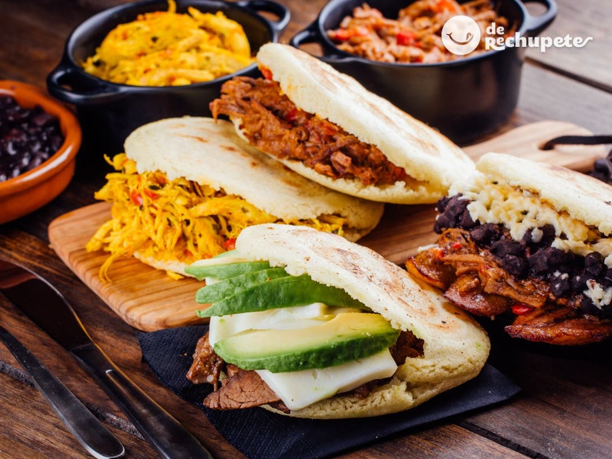
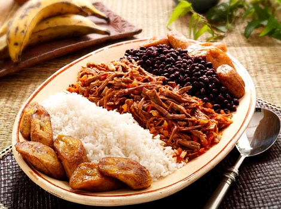
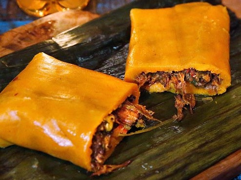
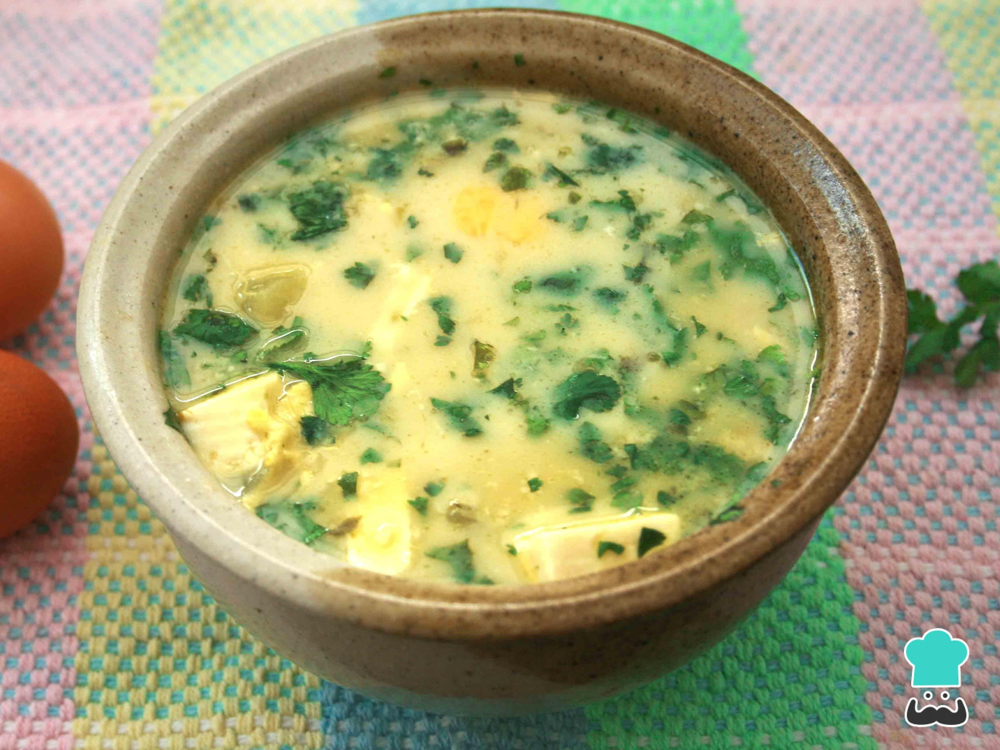
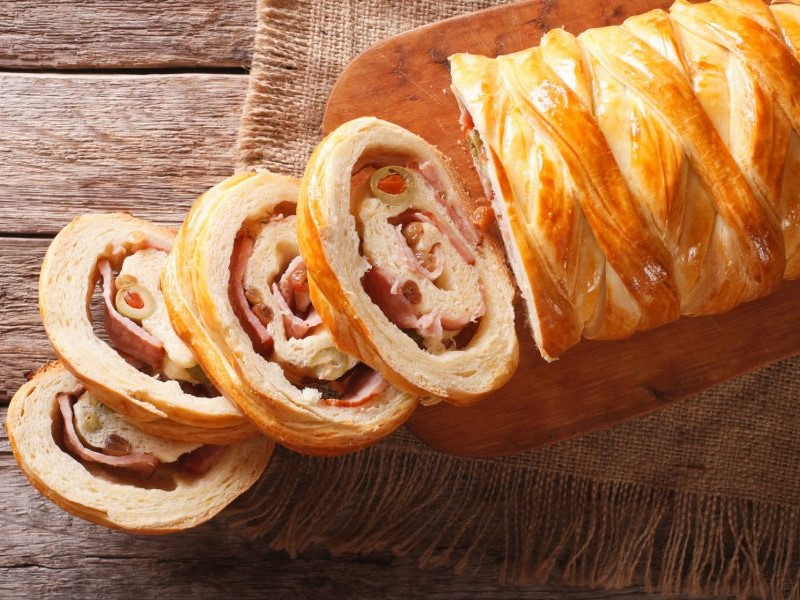

Los platillos venezolanos son una clara representacion de la mezcla cultural y gastronomica de la region, estos platillos pueden variar dependiendo de la zona geografia del pais.
Mencionare algunos de los platillos mas representativos de caracter nacional:
Representa uno de los platos mas ancestrales dentro del pais hecho a base de maiz molido o de harina de maiz precocida, de forma circular y aplanada.
Es reconocido como el plato nacional por excelencia. Sus ingredientes son arroz blanco, carne mechada, tajadas de platano frito y caraotas negras refritas.
Es un plato tradicional que se prepara especialmente para las festividades navideñas. Es una masa de harina de maíz envuelta en platano, rellena con carne de res, aceitunas, cerdo y alcaparras y luego cocida.
Es una sopa energetica y economica hecha por caldo de vegetales o carne, papas, leche, queso y cilantro.
Es un pan tipico de Venezuela, que forma parte de la gastronomia navideña del pais. Esta relleno de jamon, tocineta, uvas pasas y aceitunas verdes.
